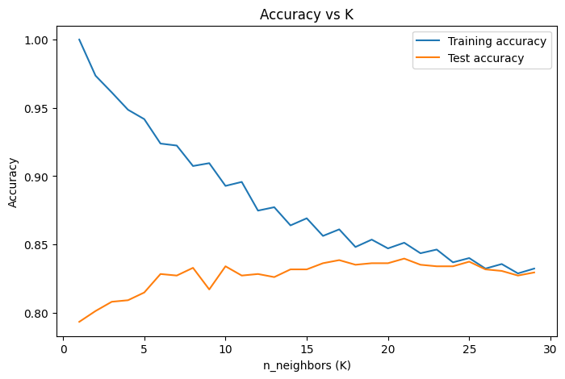
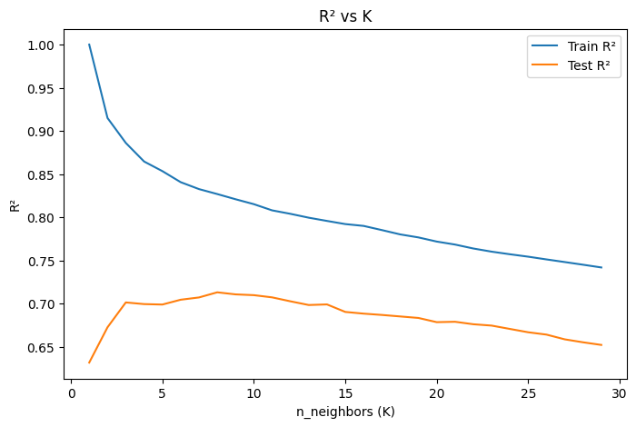
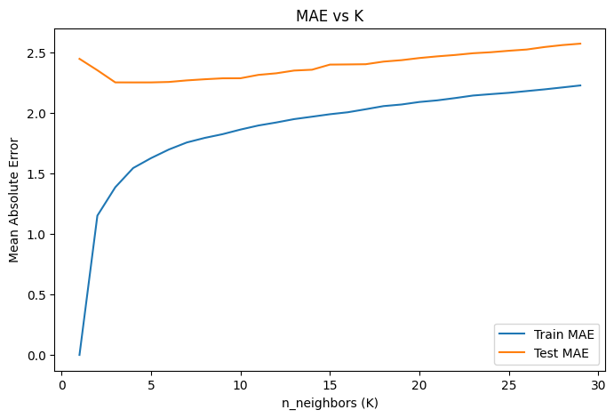
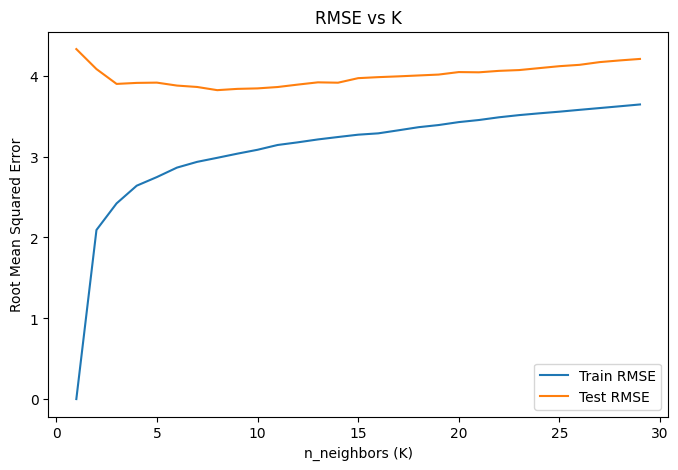
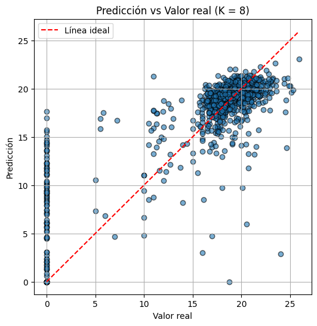
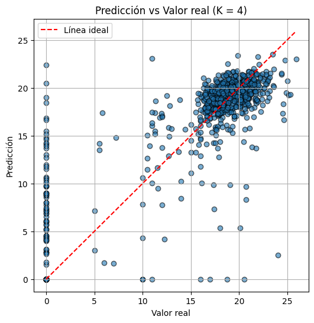

Implementacion del codigo#
import numpy as np
import pandas as pd
import seaborn as sns
import matplotlib.pyplot as plt
from sklearn.model_selection import train_test_split
from sklearn.metrics import accuracy_score, confusion_matrix, classification_report, f1_score
from sklearn.metrics import roc_curve, roc_auc_score
from sklearn.preprocessing import MinMaxScaler
from sklearn.neighbors import KNeighborsClassifier
from sklearn.neighbors import KNeighborsRegressor
from sklearn.metrics import mean_absolute_error, mean_squared_error
from imblearn.over_sampling import SMOTE
Funciones#
def Summary(data, sheet):
print(f"Hoja: {sheet}")
# Crear la tabla de resumen
resumen = {
"Cantidad de filas": data.shape[0],
"Cantidad de columnas": data.shape[1],
"Datos faltantes": data.isnull().sum().sum(),
"Filas duplicadas": data.duplicated().sum()
}
# Convertir el resumen en un DataFrame
ResumenHoja = pd.DataFrame(resumen, index=["Resumen"])
print("\nResumen:")
display(ResumenHoja)
print("\nEncabezado:")
display(data.head())
def agrupacion(df,columnas,umbral=0.02,categoria_agrupada='Otros'):
df_agrupado = df.copy()
for col in columnas:
frecuencias = df_agrupado[col].value_counts(normalize=True)
categorias_poco_frecuentes = frecuencias[frecuencias < umbral].index
df_agrupado[col] = df_agrupado[col].replace(categorias_poco_frecuentes, categoria_agrupada)
return df_agrupado
def aplicar_agrupacion(df, col, categorias_poco_frecuentes, categoria_agrupada='Otros'):
return df[col].replace(categorias_poco_frecuentes, categoria_agrupada)
Cargado de datos#
data_url = 'https://docs.google.com/spreadsheets/d/1_KCCMLmD6jYINRbLJwud-moSgEkevpdJtc8VIbZuAVM/export?format=csv'
df = pd.read_csv(data_url)
df.head()
| Marital status | Application mode | Application order | Course | Daytime/evening attendance\t | Previous qualification | Previous qualification (grade) | Nacionality | Mother's qualification | Father's qualification | ... | Curricular units 2nd sem (credited) | Curricular units 2nd sem (enrolled) | Curricular units 2nd sem (evaluations) | Curricular units 2nd sem (approved) | Curricular units 2nd sem (grade) | Curricular units 2nd sem (without evaluations) | Unemployment rate | Inflation rate | GDP | Target | |
|---|---|---|---|---|---|---|---|---|---|---|---|---|---|---|---|---|---|---|---|---|---|
| 0 | 1 | 17 | 5 | 171 | 1 | 1 | 122.0 | 1 | 19 | 12 | ... | 0 | 0 | 0 | 0 | 0.000000 | 0 | 10.8 | 1.4 | 1.74 | Dropout |
| 1 | 1 | 15 | 1 | 9254 | 1 | 1 | 160.0 | 1 | 1 | 3 | ... | 0 | 6 | 6 | 6 | 13.666667 | 0 | 13.9 | -0.3 | 0.79 | Graduate |
| 2 | 1 | 1 | 5 | 9070 | 1 | 1 | 122.0 | 1 | 37 | 37 | ... | 0 | 6 | 0 | 0 | 0.000000 | 0 | 10.8 | 1.4 | 1.74 | Dropout |
| 3 | 1 | 17 | 2 | 9773 | 1 | 1 | 122.0 | 1 | 38 | 37 | ... | 0 | 6 | 10 | 5 | 12.400000 | 0 | 9.4 | -0.8 | -3.12 | Graduate |
| 4 | 2 | 39 | 1 | 8014 | 0 | 1 | 100.0 | 1 | 37 | 38 | ... | 0 | 6 | 6 | 6 | 13.000000 | 0 | 13.9 | -0.3 | 0.79 | Graduate |
5 rows × 37 columns
df.info()
<class 'pandas.core.frame.DataFrame'>
RangeIndex: 4424 entries, 0 to 4423
Data columns (total 37 columns):
# Column Non-Null Count Dtype
--- ------ -------------- -----
0 Marital status 4424 non-null int64
1 Application mode 4424 non-null int64
2 Application order 4424 non-null int64
3 Course 4424 non-null int64
4 Daytime/evening attendance 4424 non-null int64
5 Previous qualification 4424 non-null int64
6 Previous qualification (grade) 4424 non-null float64
7 Nacionality 4424 non-null int64
8 Mother's qualification 4424 non-null int64
9 Father's qualification 4424 non-null int64
10 Mother's occupation 4424 non-null int64
11 Father's occupation 4424 non-null int64
12 Admission grade 4424 non-null float64
13 Displaced 4424 non-null int64
14 Educational special needs 4424 non-null int64
15 Debtor 4424 non-null int64
16 Tuition fees up to date 4424 non-null int64
17 Gender 4424 non-null int64
18 Scholarship holder 4424 non-null int64
19 Age at enrollment 4424 non-null int64
20 International 4424 non-null int64
21 Curricular units 1st sem (credited) 4424 non-null int64
22 Curricular units 1st sem (enrolled) 4424 non-null int64
23 Curricular units 1st sem (evaluations) 4424 non-null int64
24 Curricular units 1st sem (approved) 4424 non-null int64
25 Curricular units 1st sem (grade) 4424 non-null float64
26 Curricular units 1st sem (without evaluations) 4424 non-null int64
27 Curricular units 2nd sem (credited) 4424 non-null int64
28 Curricular units 2nd sem (enrolled) 4424 non-null int64
29 Curricular units 2nd sem (evaluations) 4424 non-null int64
30 Curricular units 2nd sem (approved) 4424 non-null int64
31 Curricular units 2nd sem (grade) 4424 non-null float64
32 Curricular units 2nd sem (without evaluations) 4424 non-null int64
33 Unemployment rate 4424 non-null float64
34 Inflation rate 4424 non-null float64
35 GDP 4424 non-null float64
36 Target 4424 non-null object
dtypes: float64(7), int64(29), object(1)
memory usage: 1.2+ MB
Analisis exploratorio de datos#
Summary(df, 'df')
Hoja: df
Resumen:
| Cantidad de filas | Cantidad de columnas | Datos faltantes | Filas duplicadas | |
|---|---|---|---|---|
| Resumen | 4424 | 37 | 0 | 0 |
Encabezado:
| Marital status | Application mode | Application order | Course | Daytime/evening attendance\t | Previous qualification | Previous qualification (grade) | Nacionality | Mother's qualification | Father's qualification | ... | Curricular units 2nd sem (credited) | Curricular units 2nd sem (enrolled) | Curricular units 2nd sem (evaluations) | Curricular units 2nd sem (approved) | Curricular units 2nd sem (grade) | Curricular units 2nd sem (without evaluations) | Unemployment rate | Inflation rate | GDP | Target | |
|---|---|---|---|---|---|---|---|---|---|---|---|---|---|---|---|---|---|---|---|---|---|
| 0 | 1 | 17 | 5 | 171 | 1 | 1 | 122.0 | 1 | 19 | 12 | ... | 0 | 0 | 0 | 0 | 0.000000 | 0 | 10.8 | 1.4 | 1.74 | Dropout |
| 1 | 1 | 15 | 1 | 9254 | 1 | 1 | 160.0 | 1 | 1 | 3 | ... | 0 | 6 | 6 | 6 | 13.666667 | 0 | 13.9 | -0.3 | 0.79 | Graduate |
| 2 | 1 | 1 | 5 | 9070 | 1 | 1 | 122.0 | 1 | 37 | 37 | ... | 0 | 6 | 0 | 0 | 0.000000 | 0 | 10.8 | 1.4 | 1.74 | Dropout |
| 3 | 1 | 17 | 2 | 9773 | 1 | 1 | 122.0 | 1 | 38 | 37 | ... | 0 | 6 | 10 | 5 | 12.400000 | 0 | 9.4 | -0.8 | -3.12 | Graduate |
| 4 | 2 | 39 | 1 | 8014 | 0 | 1 | 100.0 | 1 | 37 | 38 | ... | 0 | 6 | 6 | 6 | 13.000000 | 0 | 13.9 | -0.3 | 0.79 | Graduate |
5 rows × 37 columns
#Analisis del dataset
En esta primera fase se realizó la carga y visualización de los datos, permitiendo obtener una vista preliminar de la estructura de la información. El conjunto de datos contiene 37 columnas y múltiples registros, donde cada fila representa a un estudiante. Las variables incluyen información demográfica (estado civil, nacionalidad), académica (modo de aplicación, calificaciones previas, número de unidades curriculares aprobadas/enroladas por semestre) y económica (tasa de desempleo, inflación, PIB).
La columna Target define el estado final del estudiante, clasificándolo como “Graduate” (graduado) o “Dropout” (abandono), lo que establece el problema como una tarea de clasificación binaria.
En esta visualización inicial se observa que:
Existen variables numéricas continuas (ej. calificaciones, tasas económicas) y categóricas codificadas numéricamente (ej. estado civil, nacionalidad).
Algunos registros presentan valores en cero o vacíos en variables académicas, lo que podría indicar ausencia de evaluaciones o de participación en ciertas actividades.
La presencia de indicadores macroeconómicos sugiere que el análisis podría abarcar no solo factores individuales, sino también condiciones externas que afectan el desempeño y la permanencia de los estudiantes.
Las columnas de Curriculum units(grade) en ambos semestres no tienen un redondeo universal en los datos por lo que se realizara ese redondeo a 2 decimas debido a que son notas
df['Curricular units 1st sem (grade)']=df['Curricular units 1st sem (grade)'].round(2)
df['Curricular units 2nd sem (grade)']=df['Curricular units 2nd sem (grade)'].round(2)
df.head()
| Marital status | Application mode | Application order | Course | Daytime/evening attendance\t | Previous qualification | Previous qualification (grade) | Nacionality | Mother's qualification | Father's qualification | ... | Curricular units 2nd sem (credited) | Curricular units 2nd sem (enrolled) | Curricular units 2nd sem (evaluations) | Curricular units 2nd sem (approved) | Curricular units 2nd sem (grade) | Curricular units 2nd sem (without evaluations) | Unemployment rate | Inflation rate | GDP | Target | |
|---|---|---|---|---|---|---|---|---|---|---|---|---|---|---|---|---|---|---|---|---|---|
| 0 | 1 | 17 | 5 | 171 | 1 | 1 | 122.0 | 1 | 19 | 12 | ... | 0 | 0 | 0 | 0 | 0.00 | 0 | 10.8 | 1.4 | 1.74 | Dropout |
| 1 | 1 | 15 | 1 | 9254 | 1 | 1 | 160.0 | 1 | 1 | 3 | ... | 0 | 6 | 6 | 6 | 13.67 | 0 | 13.9 | -0.3 | 0.79 | Graduate |
| 2 | 1 | 1 | 5 | 9070 | 1 | 1 | 122.0 | 1 | 37 | 37 | ... | 0 | 6 | 0 | 0 | 0.00 | 0 | 10.8 | 1.4 | 1.74 | Dropout |
| 3 | 1 | 17 | 2 | 9773 | 1 | 1 | 122.0 | 1 | 38 | 37 | ... | 0 | 6 | 10 | 5 | 12.40 | 0 | 9.4 | -0.8 | -3.12 | Graduate |
| 4 | 2 | 39 | 1 | 8014 | 0 | 1 | 100.0 | 1 | 37 | 38 | ... | 0 | 6 | 6 | 6 | 13.00 | 0 | 13.9 | -0.3 | 0.79 | Graduate |
5 rows × 37 columns
debemos tomar en cuenta que algunas de las variables numericas en realidad tienen categorias asignadas a cada uno de sus datos. Por lo que debemos tener cuidado al tratarlos
Se realizara primero el analisis de las variables numericas que no tienen categorias asignadas a ellas
numericas=['Previous qualification (grade)','Admission grade','Age at enrollment','Curricular units 1st sem (approved)','Curricular units 1st sem (credited)','Curricular units 1st sem (enrolled)','Curricular units 1st sem (evaluations)','Curricular units 1st sem (without evaluations)',
'Curricular units 2nd sem (approved)','Curricular units 2nd sem (credited)','Curricular units 2nd sem (enrolled)','Curricular units 2nd sem (evaluations)','Curricular units 2nd sem (without evaluations)','GDP']
df[numericas].describe()
| Previous qualification (grade) | Admission grade | Age at enrollment | Curricular units 1st sem (approved) | Curricular units 1st sem (credited) | Curricular units 1st sem (enrolled) | Curricular units 1st sem (evaluations) | Curricular units 1st sem (without evaluations) | Curricular units 2nd sem (approved) | Curricular units 2nd sem (credited) | Curricular units 2nd sem (enrolled) | Curricular units 2nd sem (evaluations) | Curricular units 2nd sem (without evaluations) | GDP | |
|---|---|---|---|---|---|---|---|---|---|---|---|---|---|---|
| count | 4424.000000 | 4424.000000 | 4424.000000 | 4424.000000 | 4424.000000 | 4424.000000 | 4424.000000 | 4424.000000 | 4424.000000 | 4424.000000 | 4424.000000 | 4424.000000 | 4424.000000 | 4424.000000 |
| mean | 132.613314 | 126.978119 | 23.265145 | 4.706600 | 0.709991 | 6.270570 | 8.299051 | 0.137658 | 4.435805 | 0.541817 | 6.232143 | 8.063291 | 0.150316 | 0.001969 |
| std | 13.188332 | 14.482001 | 7.587816 | 3.094238 | 2.360507 | 2.480178 | 4.179106 | 0.690880 | 3.014764 | 1.918546 | 2.195951 | 3.947951 | 0.753774 | 2.269935 |
| min | 95.000000 | 95.000000 | 17.000000 | 0.000000 | 0.000000 | 0.000000 | 0.000000 | 0.000000 | 0.000000 | 0.000000 | 0.000000 | 0.000000 | 0.000000 | -4.060000 |
| 25% | 125.000000 | 117.900000 | 19.000000 | 3.000000 | 0.000000 | 5.000000 | 6.000000 | 0.000000 | 2.000000 | 0.000000 | 5.000000 | 6.000000 | 0.000000 | -1.700000 |
| 50% | 133.100000 | 126.100000 | 20.000000 | 5.000000 | 0.000000 | 6.000000 | 8.000000 | 0.000000 | 5.000000 | 0.000000 | 6.000000 | 8.000000 | 0.000000 | 0.320000 |
| 75% | 140.000000 | 134.800000 | 25.000000 | 6.000000 | 0.000000 | 7.000000 | 10.000000 | 0.000000 | 6.000000 | 0.000000 | 7.000000 | 10.000000 | 0.000000 | 1.790000 |
| max | 190.000000 | 190.000000 | 70.000000 | 26.000000 | 20.000000 | 26.000000 | 45.000000 | 12.000000 | 20.000000 | 19.000000 | 23.000000 | 33.000000 | 12.000000 | 3.510000 |
Se calcularon las estadísticas descriptivas de un subconjunto de variables académicas y socioeconómicas relevantes. Los resultados permiten identificar rangos, promedios y variabilidad:
Rendimiento previo y admisión:
La calificación previa (Previous qualification (grade)) presenta un promedio de 132.6 con una desviación estándar de 13.18, lo que indica cierta dispersión, aunque la mayoría se concentra entre 125 y 140.
La calificación de admisión (Admission grade) muestra un comportamiento similar, con media de 126.98 y un rango entre 95 y 190.
Edad de ingreso:
Los estudiantes ingresan en promedio a los 23.26 años, pero hay casos extremos de hasta 70 años, lo que refleja diversidad en el perfil etario.
Desempeño por semestre:
En el primer semestre, los estudiantes aprueban en promedio 4.70 unidades curriculares de las 6.27 en las que se inscriben.
En el segundo semestre, el promedio de aprobadas es 4.43 sobre 6.23 inscritas.
El número de evaluaciones suele coincidir con las inscripciones, aunque existen casos con 0 evaluaciones o unidades sin evaluación (without evaluations).
Indicador económico (PIB):
El valor medio del PIB registrado en el dataset es cercano a 0.002 (en la escala utilizada), con un rango desde –4.06 hasta 3.51, lo que sugiere periodos tanto de recesión como de crecimiento.
Observaciones iniciales:
La presencia de valores mínimos de 0 en unidades curriculares aprobadas o evaluadas puede indicar abandono temprano o inactividad académica.
El rango amplio en la edad y calificaciones sugiere que el modelo deberá manejar perfiles muy heterogéneos de estudiantes.
El desempeño académico muestra una ligera disminución en el segundo semestre respecto al primero.
df[numericas].hist(bins=30,figsize=(12,8))
plt.tight_layout()
plt.suptitle('Distribucion de variables numericas',y=1.02)
plt.show()

#Distribución de variables numéricas
Se analizaron las distribuciones de las principales variables numéricas del dataset. Las gráficas muestran lo siguiente:
Calificaciones previas y de admisión: Ambas presentan una distribución aproximadamente normal, centrada entre 120 y 140 puntos, con pocos valores extremos. Esto indica que la mayoría de los estudiantes tiene un rendimiento previo medio-alto antes de ingresar.
Edad de ingreso: La distribución es asimétrica positiva, con una gran concentración de estudiantes entre los 18 y 25 años, y pocos casos que superan los 40 años.
Rendimiento académico por semestre:
En el primer semestre, las unidades aprobadas se concentran entre 3 y 7, con un patrón similar en el segundo semestre (aunque ligeramente más bajo).
El número de unidades inscritas y evaluaciones realizadas es coherente, pero se observan casos con 0 evaluaciones, lo que podría indicar abandono o no presentación a exámenes.
Las unidades acreditadas (credited) muestran una distribución muy sesgada hacia cero, ya que la mayoría de estudiantes no presenta créditos por reconocimiento previo.
Indicador económico (PIB): Su distribución es más dispersa, con valores tanto positivos como negativos, reflejando distintos contextos macroeconómicos durante la recolección de los datos.
#Conclusión parcial: La mayoría de las variables académicas tienen distribuciones asimétricas y concentradas en rangos medios, lo que sugiere que, aunque existe diversidad de perfiles, hay un comportamiento predominante de estudiantes jóvenes con rendimiento medio y sin créditos previos. Estas observaciones servirán para interpretar mejor la relación entre rendimiento y abandono.
añadimos tambien las que representan porcentajes
sns.histplot(data=df, x='Unemployment rate', bins=30, kde=True)
plt.title('Distribución de la Tasa de desempleo')
plt.xlabel('Unemployment Rate (%)')
plt.ylabel('Frecuencia')
plt.axvline(0, color='red', linestyle='--', label='0%')
plt.legend()
plt.show()

#Distribución de la tasa de desempleo La variable Unemployment rate presenta valores comprendidos aproximadamente entre el 8% y el 16%, con ausencia de registros en valores inferiores a 7%. La distribución es multimodal, mostrando varios picos de frecuencia en torno al 8%, 10%, 12% y 14%.
La línea vertical roja marca el 0%, que no aparece en los datos, indicando que no existen periodos sin desempleo en el conjunto observado. La dispersión de los valores refleja que los datos abarcan distintos contextos laborales, lo que podría ser relevante para evaluar cómo las condiciones económicas influyen en el rendimiento y permanencia de los estudiantes.
Observación: Esta variabilidad en la tasa de desempleo puede correlacionarse con el Target para determinar si periodos de mayor desempleo están asociados con un aumento de abandonos académicos.
sns.histplot(data=df, x='Inflation rate', bins=30, kde=True)
plt.title('Distribución de la Tasa de Inflación')
plt.xlabel('Inflation Rate (%)')
plt.ylabel('Frecuencia')
plt.axvline(0, color='red', linestyle='--', label='0%')
plt.legend()
plt.show()

#Distribución de la tasa de inflación La variable Inflation rate presenta valores que oscilan entre aproximadamente –1% y 3.5%, lo que refleja periodos tanto de inflación positiva como de deflación (tasas negativas). La mayor concentración de registros se encuentra en valores cercanos al 1%, con picos adicionales en torno al 2% y 3%.
La línea vertical roja marca el punto de 0%, que actúa como referencia entre inflación y deflación. Se observan varios periodos por debajo de esta línea, indicando que durante ciertos intervalos se experimentaron condiciones deflacionarias.
#Observación: La presencia de variabilidad en la inflación sugiere que el dataset incluye datos de distintos contextos macroeconómicos. Esto podría permitir explorar si las fluctuaciones en los precios tienen relación con la probabilidad de graduación o abandono académico (Target).
realizamos boxplots para determinar la presencia de outliers en las variables numericas
for numerica in numericas:
sns.boxplot(data=df,y=numerica)
plt.title(f'Boxplot de {numerica}')
plt.show()


#Análisis de diagramas de caja y bigotes Los diagramas de caja y bigotes permiten observar la dispersión, tendencia central y presencia de valores atípicos en las variables numéricas.
#Variables académicas
Previous qualification (grade) y Admission grade presentan una distribución relativamente concentrada, con la mayoría de los datos cercanos a la mediana. Sin embargo, se identifican algunos valores atípicos altos y bajos que podrían corresponder a estudiantes con rendimientos excepcionalmente altos o bajos en su formación previa.
Variables como Curricular units (approved/enrolled/evaluations) muestran asimetría positiva, es decir, colas más largas hacia la derecha. Esto indica que la mayoría de estudiantes se concentran en valores bajos o moderados, pero existe un pequeño grupo que cursa o aprueba un número muy elevado de asignaturas.
#Variables de contexto económico
GDP, Unemployment rate y Inflation rate muestran dispersión moderada. En el caso del PIB, existen valores negativos que reflejan contracciones económicas y valores positivos que indican crecimiento. La tasa de desempleo presenta outliers en el rango alto, lo que podría reflejar crisis económicas específicas.
#Valores atípicos
La mayoría de variables numéricas presentan outliers significativos, especialmente en las relacionadas con unidades curriculares (tanto aprobadas como inscritas y evaluadas). Esto sugiere que el dataset incluye casos extremos que podrían ser analizados de forma separada para evitar sesgos en modelos predictivos.
#Conclusión: Los diagramas de caja revelan que, aunque la mayoría de las variables siguen una distribución relativamente compacta, las colas largas y la presencia de valores extremos sugieren la necesidad de normalización o tratamiento de outliers antes de aplicar modelos de análisis o predicción.
realizamos lo mismo con las variables de porcentajes
plt.figure(figsize=(4, 6))
sns.boxplot(data=df, y='Unemployment rate', color='skyblue')
plt.title('Boxplot de la Tasa de Desempleo')
plt.ylabel('Unemployment Rate (%)')
plt.show()

#Análisis del diagrama de caja y bigotes (Unemployment Rate)
Mediana (línea central de la caja): Se encuentra aproximadamente en torno al 11–12%, lo que indica que la mitad de los valores está por debajo de este nivel de desempleo y la otra mitad por encima.
Rango intercuartílico (IQR): La caja representa la dispersión entre el 25% y el 75% de los datos, que parece estar aproximadamente entre 9% y 14%, reflejando que la mayoría de las observaciones se agrupan en este rango.
Bigotes (whiskers): Se extienden hacia valores cercanos al 8% por el lado inferior y hasta alrededor del 16% por el lado superior, lo que indica la amplitud del desempleo en el conjunto de datos.
Valores atípicos (outliers): Si el gráfico muestra puntos fuera de los bigotes, representan observaciones con tasas de desempleo inusualmente bajas o altas respecto al resto.
Distribución: El hecho de que la caja no esté centrada y que el bigote superior sea más largo sugiere una ligera asimetría hacia la derecha, es decir, hay algunos periodos con desempleo más elevado que el promedio.
plt.figure(figsize=(4, 6))
sns.boxplot(data=df, y='Inflation rate', color='skyblue')
plt.title('Boxplot de la Tasa de Inflacion')
plt.ylabel('Inflation Rate (%)')
plt.show()

Análisis de la Tasa de Inflación#
El boxplot muestra que la mediana de la inflación se sitúa alrededor del 1.4%, con la mayoría de los valores concentrados entre 0.4% y 2.6%. Los extremos van desde aproximadamente –0.9% (episodios de deflación) hasta 3.6%, indicando cierta variabilidad, aunque sin valores atípicos extremos.
La distribución es relativamente simétrica, lo que sugiere que no existe un sesgo fuerte hacia inflaciones altas o bajas. Comparado con el histograma, se confirma que no hay un único valor dominante, sino varios picos a lo largo del rango, lo que podría reflejar cambios moderados en el entorno económico.
En general, los datos apuntan a un escenario de inflación mayormente baja o moderada, con oscilaciones ocasionales que no parecen desestabilizar el conjunto.
Se verifica la distribucion de cada categoria utilizando value_counts
categoricas=['Marital status','Application mode','Application order','Course','Daytime/evening attendance\t','Previous qualification','Nacionality',"Mother's qualification","Father's qualification","Mother's occupation","Father's occupation",'Displaced','Educational special needs','Debtor','Tuition fees up to date','Gender','Scholarship holder','International','Target']
for col in categoricas:
print(df[col].value_counts())
sns.countplot(data=df, x=col, order=df[col].value_counts().index)
plt.title(f'Distribución de {col}')
plt.xticks(rotation=45)
plt.show()
Marital status
1 3919
2 379
4 91
5 25
6 6
3 4
Name: count, dtype: int64

Application mode
1 1708
17 872
39 785
43 312
44 213
7 139
18 124
42 77
51 59
16 38
53 35
15 30
5 16
10 10
2 3
57 1
26 1
27 1
Name: count, dtype: int64

Application order
1 3026
2 547
3 309
4 249
5 154
6 137
9 1
0 1
Name: count, dtype: int64

Course
9500 766
9147 380
9238 355
9085 337
9773 331
9670 268
9991 268
9254 252
9070 226
171 215
8014 215
9003 210
9853 192
9119 170
9130 141
9556 86
33 12
Name: count, dtype: int64

Daytime/evening attendance\t
1 3941
0 483
Name: count, dtype: int64
c:\Users\migue\miniconda3\envs\ml_venv\lib\site-packages\IPython\core\pylabtools.py:152: UserWarning: Glyph 9 ( ) missing from font(s) DejaVu Sans.
fig.canvas.print_figure(bytes_io, **kw)

Previous qualification
1 3717
39 219
19 162
3 126
12 45
40 40
42 36
2 23
6 16
9 11
4 8
38 7
43 6
10 4
15 2
5 1
14 1
Name: count, dtype: int64

Nacionality
1 4314
41 38
26 14
6 13
22 13
24 5
100 3
11 3
103 3
62 2
21 2
101 2
25 2
2 2
105 2
32 1
13 1
109 1
108 1
14 1
17 1
Name: count, dtype: int64

Mother's qualification
1 1069
37 1009
19 953
38 562
3 438
34 130
2 83
4 49
12 42
5 21
40 9
9 8
39 8
41 6
42 4
6 4
43 4
30 3
35 3
36 3
11 3
29 3
10 3
14 2
18 1
22 1
27 1
26 1
44 1
Name: count, dtype: int64

Father's qualification
37 1209
19 968
1 904
38 702
3 282
34 112
2 68
4 39
12 38
39 20
5 18
11 10
36 8
9 5
40 5
14 4
30 4
22 4
29 3
26 2
43 2
41 2
10 2
6 2
35 2
20 1
42 1
18 1
13 1
25 1
44 1
33 1
27 1
31 1
Name: count, dtype: int64

Mother's occupation
9 1577
4 817
5 530
3 351
2 318
7 272
0 144
1 102
6 91
90 70
8 36
191 26
99 17
194 11
141 8
123 7
144 6
175 5
192 5
10 4
134 4
193 4
151 3
132 3
143 3
153 2
152 2
122 2
125 1
173 1
131 1
171 1
Name: count, dtype: int64

Father's occupation
9 1010
7 666
5 516
4 386
3 384
8 318
10 266
6 242
2 197
1 134
0 128
90 65
99 19
193 15
144 8
171 8
192 6
163 5
103 4
175 4
181 3
135 3
152 3
183 3
123 3
112 2
194 2
182 2
172 2
151 2
102 2
122 2
124 1
131 1
195 1
121 1
132 1
161 1
143 1
134 1
153 1
174 1
141 1
114 1
101 1
154 1
Name: count, dtype: int64

Displaced
1 2426
0 1998
Name: count, dtype: int64

Educational special needs
0 4373
1 51
Name: count, dtype: int64

Debtor
0 3921
1 503
Name: count, dtype: int64

Tuition fees up to date
1 3896
0 528
Name: count, dtype: int64

Gender
0 2868
1 1556
Name: count, dtype: int64

Scholarship holder
0 3325
1 1099
Name: count, dtype: int64

International
0 4314
1 110
Name: count, dtype: int64

Target
Graduate 2209
Dropout 1421
Enrolled 794
Name: count, dtype: int64

#Análisis de las variables categóricas
El conteo y distribución muestran que varias categorías presentan desbalance en la representación de clases. Por ejemplo, en variables como Marital status o Daytime/evening attendance, es probable que una o dos categorías concentren la mayoría de los registros, lo que puede influir en el comportamiento de un modelo predictivo al sesgarlo hacia las clases más frecuentes.
En otras variables, como Previous qualification o Mother’s/Father’s qualification, la distribución parece estar dominada por ciertos niveles educativos, lo que podría indicar patrones socioeconómicos recurrentes en la población estudiada.
Además, la variable Target (Dropout/Graduate) probablemente presenta un desbalance moderado, algo crucial de considerar en modelos de clasificación, ya que puede requerir técnicas de balanceo.
En general, los gráficos confirman que:
Existen categorías con amplia representación y otras con presencia mínima.
El sesgo en la distribución de clases debe ser tratado para evitar que un modelo interprete como “menos relevantes” a las categorías minoritarias.
Este tipo de visualización ayuda a identificar valores poco frecuentes que podrían reagruparse o analizarse por separado.
Realizamos la matriz de correlacion
df_corr=df.drop(columns=['Target'])
matriz_corr=df_corr.corr()
plt.figure(figsize=(12,8))
sns.heatmap(matriz_corr, annot=True, cmap="coolwarm", fmt=".2f")
plt.show()
c:\Users\migue\miniconda3\envs\ml_venv\lib\site-packages\seaborn\utils.py:61: UserWarning: Glyph 9 ( ) missing from font(s) DejaVu Sans.
fig.canvas.draw()
c:\Users\migue\miniconda3\envs\ml_venv\lib\site-packages\IPython\core\pylabtools.py:152: UserWarning: Glyph 9 ( ) missing from font(s) DejaVu Sans.
fig.canvas.print_figure(bytes_io, **kw)

#Análisis del mapa de calor de correlaciones
El heatmap presenta las correlaciones entre las variables numéricas del conjunto de datos. Se observan varios patrones relevantes:
#Correlaciones fuertes y positivas
Las variables relacionadas con curricular units (aprobadas, inscritas, evaluadas) tanto en el primer como en el segundo semestre muestran valores de correlación altos (superiores a 0.7), lo que indica que el rendimiento en un semestre suele estar asociado al rendimiento en el otro.
También hay correlaciones notables entre Previous qualification (grade) y Admission grade, lo que sugiere que el desempeño previo influye en la nota de admisión.
#Correlaciones negativas
Algunas variables macroeconómicas, como Unemployment rate y GDP, presentan correlaciones negativas, coherentes con la lógica económica donde un mayor desempleo suele asociarse a menor crecimiento económico.
#Baja o nula correlación
Varias variables numéricas no muestran una relación lineal clara con la variable Target, lo que implica que podrían no ser predictoras directas y requerirían un análisis más avanzado (por ejemplo, modelos no lineales o interacciones entre variables).
#Posible multicolinealidad
Las correlaciones muy altas entre variables académicas sugieren que podría haber redundancia de información. Esto es importante si se planea usar modelos sensibles a la multicolinealidad, como regresión lineal, ya que sería recomendable reducir dimensiones o seleccionar variables clave.
En conjunto, el heatmap evidencia que el rendimiento académico y la preparación previa son factores fuertemente relacionados entre sí, mientras que los indicadores macroeconómicos presentan relaciones más débiles pero coherentes con teorías económicas.
Podemos observar que las variables academicas estan fuertemente correlacionadas entre si y las variables demograficas no tienen una correlacion muy grande con el desempeño academico
Division de datos#
Realizamos la division de los datos antes de realizar la codificacion y la estandarizacion de variables para evitar data leakage utilizando train_test_split
Clasificacion#
Seleccionamos la variable target como el y para el problema de clasificacion binaria al momento de realizar el split
X_clas=df.drop(columns=['Target'])
Y_clas=df['Target']
X_train_clas, X_test_clas, y_train_clas, y_test_clas = train_test_split(X_clas,Y_clas, test_size=0.2, random_state=42, stratify=Y_clas)
Regresion#
Inicialmente tenemos que crear una nueva variable promedio final solicitada por el ejercicio
a = promedio primer semestre b = promedio segundo semestre \(promedio final = (a+b)/2\)
promedio_final = df['Curricular units 1st sem (grade)'] + df['Curricular units 2nd sem (grade)'] / 2
promedio_final.head()
0 0.000
1 20.835
2 0.000
3 19.630
4 18.830
dtype: float64
X_reg= df.drop(columns=['Curricular units 1st sem (grade)','Curricular units 2nd sem (grade)'])
Y_reg= promedio_final
X_train_reg, X_test_reg, y_train_reg, y_test_reg = train_test_split(X_reg,Y_reg, test_size=0.2, random_state=42)
Preprocesamiento de datos#
Ahora realizamos el preprocesamiento de datos
Las variables binarias ya estan codificadas como 0 y 1 por lo que se mantienen igual
La variable target y tenemos que reetiquetarla debido a que el objetivo del modelo es determinar si el estudiante es Dropout. De esta manera pasamos a un problema de clasificacion binario
y_train_clas = (y_train_clas == "Dropout").astype(int)
y_test_clas = (y_test_clas == "Dropout").astype(int)
Ahora codificamos las variables categoricas empezando por las nominales
Para variables nominales que tengan mas de 15 categorias, podemos agrupar las menos relevantes para luego aplicar one-hot encoding. De esta manera podemos reducirla dimensionalidad y mejorar la calidad de las distancias al aplicar el modelo de KNN
columnas_agrupar=['Application mode','Course','Nacionality',"Mother's occupation","Father's occupation"]
X_train_clas=agrupacion(X_train_clas,columnas_agrupar,umbral=0.02,categoria_agrupada='-1')
X_train_reg = agrupacion(X_train_reg, columnas_agrupar, umbral = 0.5, categoria_agrupada= '-1')
for col in columnas_agrupar:
freqs_train = X_train_clas[col].value_counts(normalize=True)
cat_poco_freq = freqs_train[freqs_train < 0.02].index
X_test_clas[col] = aplicar_agrupacion(X_test_clas, col, cat_poco_freq)
for col in columnas_agrupar:
freqs_train = X_train_reg[col].value_counts(normalize=True)
cat_poco_freq = freqs_train[freqs_train < 0.5].index
X_test_reg[col] = aplicar_agrupacion(X_test_reg, col, cat_poco_freq)
X_train_clas = pd.get_dummies(X_train_clas,columns=columnas_agrupar)
X_test_clas = pd.get_dummies(X_test_clas,columns=columnas_agrupar)
X_train_reg = pd.get_dummies(X_train_reg,columns=columnas_agrupar)
X_test_reg = pd.get_dummies(X_test_reg,columns=columnas_agrupar)
X_train_clas, X_test_clas = X_train_clas.align(X_test_clas, join='left', axis=1, fill_value=0)
X_train_reg, X_test_reg = X_train_reg.align(X_test_reg, join='left', axis=1, fill_value=0)
Para las variables ordinales se les realiza el mapeo de las categorias para respetar el orden existente, para luego reemplazarlo en el train y el test
mapeo_educativo_padres = {
# 0 = Sin educación
35: 0,
36: 0,
# 1 = Básica primaria incompleta
37: 1,
# 2 = Básica primaria completa
38: 2,
11: 2,
26: 2,
30: 2,
# 3 = Secundaria incompleta
29: 3,
14: 3,
10: 3,
12: 3,
13: 3,
25: 3,
# 4 = Secundaria completa
19: 4,
27: 4,
1: 4,
18: 4,
20: 4,
# 5 = Técnico/profesional incompleto
22: 5,
39: 5,
31: 5,
# 6 = Técnico/profesional completo
40: 6,
41: 6,
42: 6,
33: 6,
# 7 = Universitario incompleto
9: 7,
# 8 = Universitario completo
2: 8,
3: 8,
# 9 = Postgrado
4: 9,
43: 9,
5: 9,
44: 9,
# Desconocido
34: None
}
X_train_clas["Mother's qualification"]=X_train_clas["Mother's qualification"].map(mapeo_educativo_padres)
X_train_clas["Father's qualification"]=X_train_clas["Father's qualification"].map(mapeo_educativo_padres)
X_test_clas["Mother's qualification"]=X_test_clas["Mother's qualification"].map(mapeo_educativo_padres)
X_test_clas["Father's qualification"]=X_test_clas["Father's qualification"].map(mapeo_educativo_padres)
mediana_madre=X_train_clas["Mother's qualification"].median()
mediana_padre=X_train_clas["Father's qualification"].median()
X_train_clas["Mother's qualification"] = X_train_clas["Mother's qualification"].fillna(mediana_madre)
X_train_clas["Father's qualification"] = X_train_clas["Father's qualification"].fillna(mediana_padre)
X_test_clas["Mother's qualification"] = X_test_clas["Mother's qualification"].fillna(mediana_madre)
X_test_clas["Father's qualification"] = X_test_clas["Father's qualification"].fillna(mediana_padre)
X_train_reg["Mother's qualification"]=X_train_reg["Mother's qualification"].map(mapeo_educativo_padres)
X_train_reg["Father's qualification"]=X_train_reg["Father's qualification"].map(mapeo_educativo_padres)
X_test_reg["Mother's qualification"]=X_test_reg["Mother's qualification"].map(mapeo_educativo_padres)
X_test_reg["Father's qualification"]=X_test_reg["Father's qualification"].map(mapeo_educativo_padres)
mediana_madre=X_train_reg["Mother's qualification"].median()
mediana_padre=X_train_reg["Father's qualification"].median()
X_train_reg["Mother's qualification"] = X_train_reg["Mother's qualification"].fillna(mediana_madre)
X_train_reg["Father's qualification"] = X_train_reg["Father's qualification"].fillna(mediana_padre)
X_test_reg["Mother's qualification"] = X_test_reg["Mother's qualification"].fillna(mediana_madre)
X_test_reg["Father's qualification"] = X_test_reg["Father's qualification"].fillna(mediana_padre)
X_train_clas = pd.get_dummies(X_train_clas,'Marital status')
X_test_clas = pd.get_dummies(X_test_clas,'Marital status')
X_train_reg = pd.get_dummies(X_train_reg,'Marital status')
X_test_reg = pd.get_dummies(X_test_reg,'Marital status')
Con previous_qualification como existen algunas categorias que en los de los padres no estan se realiza su mapeo por separado
map_educacion = {
# 1 = Educación básica incompleta o en curso
9: 1,
10: 1,
12: 1,
15: 1,
# 2 = Educación básica completa
38: 2,
19: 2,
14: 2,
# 3 = Secundaria completa
1: 3,
# 4 = Educación técnica / profesional
39: 4,
42: 4,
# 5 = Educación superior - grado / licenciatura
2: 5,
3: 5,
40: 5,
# 6 = Educación superior - máster
4: 6,
43: 6,
# 7 = Educación superior - doctorado
5: 7,
# 9 = Otro / Ambiguo
6: 9,
}
X_train_clas['Previous qualification']=X_train_clas['Previous qualification'].map(map_educacion)
X_test_clas['Previous qualification']=X_test_clas['Previous qualification'].map(map_educacion)
X_train_reg['Previous qualification']=X_train_reg['Previous qualification'].map(map_educacion)
X_test_reg['Previous qualification']=X_test_reg['Previous qualification'].map(map_educacion)
Ya se codificaron todas las categoricas. Por lo tanto falta escalar las variables numericas y las variables mapeadas para poder utilizar KNN
Numericas=['Application order','Previous qualification','Previous qualification (grade)',"Mother's qualification","Father's qualification",'Admission grade','Age at enrollment','Curricular units 1st sem (approved)','Curricular units 1st sem (credited)','Curricular units 1st sem (enrolled)','Curricular units 1st sem (evaluations)','Curricular units 1st sem (without evaluations)',
'Curricular units 2nd sem (approved)','Curricular units 2nd sem (credited)','Curricular units 2nd sem (enrolled)','Curricular units 2nd sem (evaluations)','Curricular units 2nd sem (without evaluations)','Unemployment rate','Inflation rate','GDP']
scaler=MinMaxScaler()
X_train_clas[Numericas] = scaler.fit_transform(X_train_clas[Numericas])
X_test_clas[Numericas] = scaler.transform(X_test_clas[Numericas])
Realizamos el balanceo de clases mediante SMOTE para no generar problemas en el modelo
smote=SMOTE(random_state=42)
X_train_clas,y_train_clas=smote.fit_resample(X_train_clas, y_train_clas)
c:\Users\migue\miniconda3\envs\ml_venv\lib\site-packages\sklearn\base.py:474: FutureWarning: `BaseEstimator._validate_data` is deprecated in 1.6 and will be removed in 1.7. Use `sklearn.utils.validation.validate_data` instead. This function becomes public and is part of the scikit-learn developer API.
warnings.warn(
Ahora con todo el procesamiento hecho se puede realizar el modelo KNN
KNN clasificacion#
se revisaran distintos valores de k para determinar cual es el mas apropiado para el modelo de clasificacion
neighbors_settings = range(1, 30)
training_accuracy = []
test_accuracy = []
for n_neighbors in neighbors_settings:
clf = KNeighborsClassifier(n_neighbors=n_neighbors)
clf.fit(X_train_clas, y_train_clas)
training_accuracy.append(clf.score(X_train_clas, y_train_clas))
test_accuracy.append(clf.score(X_test_clas, y_test_clas))
plt.figure(figsize=(8,5))
plt.plot(neighbors_settings, training_accuracy, label="Training accuracy")
plt.plot(neighbors_settings, test_accuracy, label="Test accuracy")
plt.xlabel("n_neighbors (K)")
plt.ylabel("Accuracy")
plt.legend()
plt.title("Accuracy vs K")
plt.show()

#Análisis del rendimiento del modelo KNN según el parámetro K
El gráfico compara la precisión (accuracy) en los conjuntos de entrenamiento y prueba para diferentes valores de n_neighbors en el algoritmo K-Nearest Neighbors.
#Tendencia general
Para valores bajos de K (cercanos a 1), la precisión en entrenamiento es muy alta, casi perfecta, lo que indica sobreajuste (overfitting). Sin embargo, la precisión en el conjunto de prueba es más baja y variable.
A medida que K aumenta, la precisión de entrenamiento disminuye gradualmente, mientras que la de prueba tiende a estabilizarse o incluso mejorar hasta cierto punto.
#Punto óptimo
Existe un rango intermedio de K donde la precisión de prueba es máxima y la diferencia con la de entrenamiento es mínima. Este rango representa el equilibrio entre sesgo y varianza.
Un valor de K demasiado alto provoca que el modelo se vuelva demasiado general y pierda capacidad para capturar patrones locales, reduciendo la precisión tanto en entrenamiento como en prueba.
#Conclusión práctica
El análisis sugiere seleccionar un K dentro del rango donde la curva de test accuracy alcanza su punto más alto y está cercana a la de training accuracy, ya que es ahí donde el modelo presenta la mejor capacidad de generalización.
Este tipo de gráfico es fundamental para evitar tanto el sobreajuste como el subajuste y optimizar el hiperparámetro K de manera informada.
Podriamos utilizar un rango entre 15-19
k_valores = [15,16,17,18,19,20,21,22]
resultados = []
for k in k_valores:
knn = KNeighborsClassifier(n_neighbors=k)
knn.fit(X_train_clas, y_train_clas)
y_pred = knn.predict(X_test_clas)
y_pred_prob = knn.predict_proba(X_test_clas)[:, 1]
cm = confusion_matrix(y_test_clas, y_pred)
report = classification_report(y_test_clas, y_pred, output_dict=True)
auc_score = roc_auc_score(y_test_clas, y_pred_prob)
resultados.append({
'k': k,
'accuracy': report['accuracy'],
'precision': report['1']['precision'],
'recall': report['1']['recall'],
'f1-score': report['1']['f1-score'],
'roc_auc': auc_score
})
print(f"\n--- K = {k} ---")
print("Confusion Matrix:\n", cm)
print("Classification Report:\n", classification_report(y_test_clas, y_pred))
print(f"ROC-AUC: {auc_score:.4f}")
--- K = 15 ---
Confusion Matrix:
[[558 43]
[106 178]]
Classification Report:
precision recall f1-score support
0 0.84 0.93 0.88 601
1 0.81 0.63 0.70 284
accuracy 0.83 885
macro avg 0.82 0.78 0.79 885
weighted avg 0.83 0.83 0.83 885
ROC-AUC: 0.8533
--- K = 16 ---
Confusion Matrix:
[[567 34]
[111 173]]
Classification Report:
precision recall f1-score support
0 0.84 0.94 0.89 601
1 0.84 0.61 0.70 284
accuracy 0.84 885
macro avg 0.84 0.78 0.80 885
weighted avg 0.84 0.84 0.83 885
ROC-AUC: 0.8537
--- K = 17 ---
Confusion Matrix:
[[563 38]
[105 179]]
Classification Report:
precision recall f1-score support
0 0.84 0.94 0.89 601
1 0.82 0.63 0.71 284
accuracy 0.84 885
macro avg 0.83 0.78 0.80 885
weighted avg 0.84 0.84 0.83 885
ROC-AUC: 0.8558
--- K = 18 ---
Confusion Matrix:
[[568 33]
[113 171]]
Classification Report:
precision recall f1-score support
0 0.83 0.95 0.89 601
1 0.84 0.60 0.70 284
accuracy 0.84 885
macro avg 0.84 0.77 0.79 885
weighted avg 0.84 0.84 0.83 885
ROC-AUC: 0.8594
--- K = 19 ---
Confusion Matrix:
[[564 37]
[108 176]]
Classification Report:
precision recall f1-score support
0 0.84 0.94 0.89 601
1 0.83 0.62 0.71 284
accuracy 0.84 885
macro avg 0.83 0.78 0.80 885
weighted avg 0.84 0.84 0.83 885
ROC-AUC: 0.8618
--- K = 20 ---
Confusion Matrix:
[[567 34]
[111 173]]
Classification Report:
precision recall f1-score support
0 0.84 0.94 0.89 601
1 0.84 0.61 0.70 284
accuracy 0.84 885
macro avg 0.84 0.78 0.80 885
weighted avg 0.84 0.84 0.83 885
ROC-AUC: 0.8610
--- K = 21 ---
Confusion Matrix:
[[567 34]
[108 176]]
Classification Report:
precision recall f1-score support
0 0.84 0.94 0.89 601
1 0.84 0.62 0.71 284
accuracy 0.84 885
macro avg 0.84 0.78 0.80 885
weighted avg 0.84 0.84 0.83 885
ROC-AUC: 0.8632
--- K = 22 ---
Confusion Matrix:
[[568 33]
[113 171]]
Classification Report:
precision recall f1-score support
0 0.83 0.95 0.89 601
1 0.84 0.60 0.70 284
accuracy 0.84 885
macro avg 0.84 0.77 0.79 885
weighted avg 0.84 0.84 0.83 885
ROC-AUC: 0.8626
df_resultados = pd.DataFrame(resultados)
print("\nResumen comparativo:\n", df_resultados)
Resumen comparativo:
k accuracy precision recall f1-score roc_auc
0 15 0.831638 0.805430 0.626761 0.704950 0.853308
1 16 0.836158 0.835749 0.609155 0.704684 0.853665
2 17 0.838418 0.824885 0.630282 0.714571 0.855760
3 18 0.835028 0.838235 0.602113 0.700820 0.859424
4 19 0.836158 0.826291 0.619718 0.708249 0.861750
5 20 0.836158 0.835749 0.609155 0.704684 0.861018
6 21 0.839548 0.838095 0.619718 0.712551 0.863186
7 22 0.835028 0.838235 0.602113 0.700820 0.862606
#Precisión general El accuracy se mantiene bastante estable en todo el rango (≈ 0.83–0.84), con el valor máximo en K = 21 (0.8395).
Esto indica que todos los modelos tienen un rendimiento muy similar en exactitud global, pero pequeñas diferencias pueden ser relevantes dependiendo del objetivo.
#Precisión (precision) Los valores más altos de precisión están en K = 18, 20, 21 y 22 (≈ 0.838), lo que significa que estos modelos tienden a cometer menos falsos positivos. Sin embargo, alta precisión no siempre implica mejor modelo si el recall es bajo.
#Sensibilidad (recall) El recall más alto se observa en K = 17 (0.6302), lo que significa que este valor de K identifica la mayor proporción de casos positivos reales. Los K más altos (18, 20, 22) muestran una caída en recall hasta ≈ 0.6021, lo que significa que el modelo empieza a perder casos positivos.
#Equilibrio general (F1-Score) El mejor F1-score se logra en K = 17 (0.7146), seguido de cerca por K = 21 (0.7126). Esto sugiere que K = 17 ofrece el mejor balance entre precisión y recall.
#Discriminación del modelo (ROC-AUC) El valor más alto de ROC-AUC se da en K = 21 (0.8632), seguido por K = 19 y 20 (≈ 0.861–0.862). Un alto ROC-AUC indica que el modelo separa bien las clases, incluso si la precisión o el recall no son óptimos.
#Conclusión Si se prioriza el equilibrio entre precisión y recall → K = 17 es la mejor opción. Si se prioriza la capacidad de discriminación (ROC-AUC) → K = 21 sería el más indicado.
Si se quiere alta precisión minimizando falsos positivos → valores como K = 18 o 22 funcionan bien, pero sacrifican recall.
Podemos observar que cuando k es 17 tiene los valores mas balanceados entre todas las metricas escogidas sin embargo 21 tiene mayor Roc_Auc
clf = KNeighborsClassifier(n_neighbors=21)
clf.fit(X_train_clas, y_train_clas)
KNeighborsClassifier(n_neighbors=21)In a Jupyter environment, please rerun this cell to show the HTML representation or trust the notebook.
On GitHub, the HTML representation is unable to render, please try loading this page with nbviewer.org.
KNeighborsClassifier(n_neighbors=21)
print(clf.score(X_train_clas, y_train_clas), clf.score(X_test_clas, y_test_clas))
0.851165695253955 0.8395480225988701
Si bien k=17 y k=21 pueden ser candidatos al k a escoger hay que analizar mas a fondo realizando una validuacion manual
k_min = 1
k_max = 29
n_repeticiones = 5
mejor_k = None
mejor_score = -1
resultados_por_k = []
for k in range(k_min, k_max + 1):
resultados_train = []
resultados_test = []
for i in range(n_repeticiones):
X_train, X_test, y_train, y_test = train_test_split(
X_clas, Y_clas, test_size=0.2, random_state=i, stratify=Y_clas
)
y_train = (y_train == "Dropout").astype(int)
y_test = (y_test == "Dropout").astype(int)
X_train = agrupacion(X_train, columnas_agrupar, umbral=0.02, categoria_agrupada='-1')
for col in columnas_agrupar:
freqs_train = X_train[col].value_counts(normalize=True)
cat_poco_freq = freqs_train[freqs_train < 0.02].index
X_test[col] = aplicar_agrupacion(X_test, col, cat_poco_freq)
X_train = pd.get_dummies(X_train, columns=columnas_agrupar)
X_test = pd.get_dummies(X_test, columns=columnas_agrupar)
X_train, X_test = X_train.align(X_test, join='left', axis=1, fill_value=0)
X_train["Mother's qualification"] = X_train["Mother's qualification"].map(mapeo_educativo_padres)
X_train["Father's qualification"] = X_train["Father's qualification"].map(mapeo_educativo_padres)
X_test["Mother's qualification"] = X_test["Mother's qualification"].map(mapeo_educativo_padres)
X_test["Father's qualification"] = X_test["Father's qualification"].map(mapeo_educativo_padres)
mediana_madre = X_train["Mother's qualification"].median()
mediana_padre = X_train["Father's qualification"].median()
X_train["Mother's qualification"] = X_train["Mother's qualification"].fillna(mediana_madre)
X_train["Father's qualification"] = X_train["Father's qualification"].fillna(mediana_padre)
X_test["Mother's qualification"] = X_test["Mother's qualification"].fillna(mediana_madre)
X_test["Father's qualification"] = X_test["Father's qualification"].fillna(mediana_padre)
X_train = pd.get_dummies(X_train,'Marital status')
X_test = pd.get_dummies(X_test,'Marital status')
X_train['Previous qualification'] = X_train['Previous qualification'].map(map_educacion)
X_test['Previous qualification'] = X_test['Previous qualification'].map(map_educacion)
scaler = MinMaxScaler()
X_train[Numericas] = scaler.fit_transform(X_train[Numericas])
X_test[Numericas] = scaler.transform(X_test[Numericas])
smote = SMOTE(random_state=42)
X_train, y_train = smote.fit_resample(X_train, y_train)
knn = KNeighborsClassifier(n_neighbors=k)
knn.fit(X_train, y_train)
f1_train = f1_score(y_train, knn.predict(X_train), average='weighted')
f1_test = f1_score(y_test, knn.predict(X_test), average='weighted')
resultados_train.append(f1_train)
resultados_test.append(f1_test)
promedio_train = np.mean(resultados_train)
promedio_test = np.mean(resultados_test)
resultados_por_k.append((k, promedio_train, promedio_test))
if promedio_test > mejor_score:
mejor_score = promedio_test
mejor_k = k
print("Resultados por k (F1-score):")
for k, train_f1, test_f1 in resultados_por_k:
print(f"k={k} | Train: {train_f1:.4f} | Test: {test_f1:.4f}")
print(f"\nMejor k: {mejor_k} con F1-score en test de {mejor_score:.4f}")
c:\Users\migue\miniconda3\envs\ml_venv\lib\site-packages\sklearn\base.py:474: FutureWarning: `BaseEstimator._validate_data` is deprecated in 1.6 and will be removed in 1.7. Use `sklearn.utils.validation.validate_data` instead. This function becomes public and is part of the scikit-learn developer API.
warnings.warn(
c:\Users\migue\miniconda3\envs\ml_venv\lib\site-packages\sklearn\base.py:474: FutureWarning: `BaseEstimator._validate_data` is deprecated in 1.6 and will be removed in 1.7. Use `sklearn.utils.validation.validate_data` instead. This function becomes public and is part of the scikit-learn developer API.
warnings.warn(
c:\Users\migue\miniconda3\envs\ml_venv\lib\site-packages\sklearn\base.py:474: FutureWarning: `BaseEstimator._validate_data` is deprecated in 1.6 and will be removed in 1.7. Use `sklearn.utils.validation.validate_data` instead. This function becomes public and is part of the scikit-learn developer API.
warnings.warn(
c:\Users\migue\miniconda3\envs\ml_venv\lib\site-packages\sklearn\base.py:474: FutureWarning: `BaseEstimator._validate_data` is deprecated in 1.6 and will be removed in 1.7. Use `sklearn.utils.validation.validate_data` instead. This function becomes public and is part of the scikit-learn developer API.
warnings.warn(
c:\Users\migue\miniconda3\envs\ml_venv\lib\site-packages\sklearn\base.py:474: FutureWarning: `BaseEstimator._validate_data` is deprecated in 1.6 and will be removed in 1.7. Use `sklearn.utils.validation.validate_data` instead. This function becomes public and is part of the scikit-learn developer API.
warnings.warn(
c:\Users\migue\miniconda3\envs\ml_venv\lib\site-packages\sklearn\base.py:474: FutureWarning: `BaseEstimator._validate_data` is deprecated in 1.6 and will be removed in 1.7. Use `sklearn.utils.validation.validate_data` instead. This function becomes public and is part of the scikit-learn developer API.
warnings.warn(
c:\Users\migue\miniconda3\envs\ml_venv\lib\site-packages\sklearn\base.py:474: FutureWarning: `BaseEstimator._validate_data` is deprecated in 1.6 and will be removed in 1.7. Use `sklearn.utils.validation.validate_data` instead. This function becomes public and is part of the scikit-learn developer API.
warnings.warn(
c:\Users\migue\miniconda3\envs\ml_venv\lib\site-packages\sklearn\base.py:474: FutureWarning: `BaseEstimator._validate_data` is deprecated in 1.6 and will be removed in 1.7. Use `sklearn.utils.validation.validate_data` instead. This function becomes public and is part of the scikit-learn developer API.
warnings.warn(
c:\Users\migue\miniconda3\envs\ml_venv\lib\site-packages\sklearn\base.py:474: FutureWarning: `BaseEstimator._validate_data` is deprecated in 1.6 and will be removed in 1.7. Use `sklearn.utils.validation.validate_data` instead. This function becomes public and is part of the scikit-learn developer API.
warnings.warn(
c:\Users\migue\miniconda3\envs\ml_venv\lib\site-packages\sklearn\base.py:474: FutureWarning: `BaseEstimator._validate_data` is deprecated in 1.6 and will be removed in 1.7. Use `sklearn.utils.validation.validate_data` instead. This function becomes public and is part of the scikit-learn developer API.
warnings.warn(
c:\Users\migue\miniconda3\envs\ml_venv\lib\site-packages\sklearn\base.py:474: FutureWarning: `BaseEstimator._validate_data` is deprecated in 1.6 and will be removed in 1.7. Use `sklearn.utils.validation.validate_data` instead. This function becomes public and is part of the scikit-learn developer API.
warnings.warn(
c:\Users\migue\miniconda3\envs\ml_venv\lib\site-packages\sklearn\base.py:474: FutureWarning: `BaseEstimator._validate_data` is deprecated in 1.6 and will be removed in 1.7. Use `sklearn.utils.validation.validate_data` instead. This function becomes public and is part of the scikit-learn developer API.
warnings.warn(
c:\Users\migue\miniconda3\envs\ml_venv\lib\site-packages\sklearn\base.py:474: FutureWarning: `BaseEstimator._validate_data` is deprecated in 1.6 and will be removed in 1.7. Use `sklearn.utils.validation.validate_data` instead. This function becomes public and is part of the scikit-learn developer API.
warnings.warn(
c:\Users\migue\miniconda3\envs\ml_venv\lib\site-packages\sklearn\base.py:474: FutureWarning: `BaseEstimator._validate_data` is deprecated in 1.6 and will be removed in 1.7. Use `sklearn.utils.validation.validate_data` instead. This function becomes public and is part of the scikit-learn developer API.
warnings.warn(
c:\Users\migue\miniconda3\envs\ml_venv\lib\site-packages\sklearn\base.py:474: FutureWarning: `BaseEstimator._validate_data` is deprecated in 1.6 and will be removed in 1.7. Use `sklearn.utils.validation.validate_data` instead. This function becomes public and is part of the scikit-learn developer API.
warnings.warn(
c:\Users\migue\miniconda3\envs\ml_venv\lib\site-packages\sklearn\base.py:474: FutureWarning: `BaseEstimator._validate_data` is deprecated in 1.6 and will be removed in 1.7. Use `sklearn.utils.validation.validate_data` instead. This function becomes public and is part of the scikit-learn developer API.
warnings.warn(
c:\Users\migue\miniconda3\envs\ml_venv\lib\site-packages\sklearn\base.py:474: FutureWarning: `BaseEstimator._validate_data` is deprecated in 1.6 and will be removed in 1.7. Use `sklearn.utils.validation.validate_data` instead. This function becomes public and is part of the scikit-learn developer API.
warnings.warn(
c:\Users\migue\miniconda3\envs\ml_venv\lib\site-packages\sklearn\base.py:474: FutureWarning: `BaseEstimator._validate_data` is deprecated in 1.6 and will be removed in 1.7. Use `sklearn.utils.validation.validate_data` instead. This function becomes public and is part of the scikit-learn developer API.
warnings.warn(
c:\Users\migue\miniconda3\envs\ml_venv\lib\site-packages\sklearn\base.py:474: FutureWarning: `BaseEstimator._validate_data` is deprecated in 1.6 and will be removed in 1.7. Use `sklearn.utils.validation.validate_data` instead. This function becomes public and is part of the scikit-learn developer API.
warnings.warn(
c:\Users\migue\miniconda3\envs\ml_venv\lib\site-packages\sklearn\base.py:474: FutureWarning: `BaseEstimator._validate_data` is deprecated in 1.6 and will be removed in 1.7. Use `sklearn.utils.validation.validate_data` instead. This function becomes public and is part of the scikit-learn developer API.
warnings.warn(
c:\Users\migue\miniconda3\envs\ml_venv\lib\site-packages\sklearn\base.py:474: FutureWarning: `BaseEstimator._validate_data` is deprecated in 1.6 and will be removed in 1.7. Use `sklearn.utils.validation.validate_data` instead. This function becomes public and is part of the scikit-learn developer API.
warnings.warn(
c:\Users\migue\miniconda3\envs\ml_venv\lib\site-packages\sklearn\base.py:474: FutureWarning: `BaseEstimator._validate_data` is deprecated in 1.6 and will be removed in 1.7. Use `sklearn.utils.validation.validate_data` instead. This function becomes public and is part of the scikit-learn developer API.
warnings.warn(
c:\Users\migue\miniconda3\envs\ml_venv\lib\site-packages\sklearn\base.py:474: FutureWarning: `BaseEstimator._validate_data` is deprecated in 1.6 and will be removed in 1.7. Use `sklearn.utils.validation.validate_data` instead. This function becomes public and is part of the scikit-learn developer API.
warnings.warn(
c:\Users\migue\miniconda3\envs\ml_venv\lib\site-packages\sklearn\base.py:474: FutureWarning: `BaseEstimator._validate_data` is deprecated in 1.6 and will be removed in 1.7. Use `sklearn.utils.validation.validate_data` instead. This function becomes public and is part of the scikit-learn developer API.
warnings.warn(
c:\Users\migue\miniconda3\envs\ml_venv\lib\site-packages\sklearn\base.py:474: FutureWarning: `BaseEstimator._validate_data` is deprecated in 1.6 and will be removed in 1.7. Use `sklearn.utils.validation.validate_data` instead. This function becomes public and is part of the scikit-learn developer API.
warnings.warn(
c:\Users\migue\miniconda3\envs\ml_venv\lib\site-packages\sklearn\base.py:474: FutureWarning: `BaseEstimator._validate_data` is deprecated in 1.6 and will be removed in 1.7. Use `sklearn.utils.validation.validate_data` instead. This function becomes public and is part of the scikit-learn developer API.
warnings.warn(
c:\Users\migue\miniconda3\envs\ml_venv\lib\site-packages\sklearn\base.py:474: FutureWarning: `BaseEstimator._validate_data` is deprecated in 1.6 and will be removed in 1.7. Use `sklearn.utils.validation.validate_data` instead. This function becomes public and is part of the scikit-learn developer API.
warnings.warn(
c:\Users\migue\miniconda3\envs\ml_venv\lib\site-packages\sklearn\base.py:474: FutureWarning: `BaseEstimator._validate_data` is deprecated in 1.6 and will be removed in 1.7. Use `sklearn.utils.validation.validate_data` instead. This function becomes public and is part of the scikit-learn developer API.
warnings.warn(
c:\Users\migue\miniconda3\envs\ml_venv\lib\site-packages\sklearn\base.py:474: FutureWarning: `BaseEstimator._validate_data` is deprecated in 1.6 and will be removed in 1.7. Use `sklearn.utils.validation.validate_data` instead. This function becomes public and is part of the scikit-learn developer API.
warnings.warn(
c:\Users\migue\miniconda3\envs\ml_venv\lib\site-packages\sklearn\base.py:474: FutureWarning: `BaseEstimator._validate_data` is deprecated in 1.6 and will be removed in 1.7. Use `sklearn.utils.validation.validate_data` instead. This function becomes public and is part of the scikit-learn developer API.
warnings.warn(
c:\Users\migue\miniconda3\envs\ml_venv\lib\site-packages\sklearn\base.py:474: FutureWarning: `BaseEstimator._validate_data` is deprecated in 1.6 and will be removed in 1.7. Use `sklearn.utils.validation.validate_data` instead. This function becomes public and is part of the scikit-learn developer API.
warnings.warn(
c:\Users\migue\miniconda3\envs\ml_venv\lib\site-packages\sklearn\base.py:474: FutureWarning: `BaseEstimator._validate_data` is deprecated in 1.6 and will be removed in 1.7. Use `sklearn.utils.validation.validate_data` instead. This function becomes public and is part of the scikit-learn developer API.
warnings.warn(
c:\Users\migue\miniconda3\envs\ml_venv\lib\site-packages\sklearn\base.py:474: FutureWarning: `BaseEstimator._validate_data` is deprecated in 1.6 and will be removed in 1.7. Use `sklearn.utils.validation.validate_data` instead. This function becomes public and is part of the scikit-learn developer API.
warnings.warn(
c:\Users\migue\miniconda3\envs\ml_venv\lib\site-packages\sklearn\base.py:474: FutureWarning: `BaseEstimator._validate_data` is deprecated in 1.6 and will be removed in 1.7. Use `sklearn.utils.validation.validate_data` instead. This function becomes public and is part of the scikit-learn developer API.
warnings.warn(
c:\Users\migue\miniconda3\envs\ml_venv\lib\site-packages\sklearn\base.py:474: FutureWarning: `BaseEstimator._validate_data` is deprecated in 1.6 and will be removed in 1.7. Use `sklearn.utils.validation.validate_data` instead. This function becomes public and is part of the scikit-learn developer API.
warnings.warn(
c:\Users\migue\miniconda3\envs\ml_venv\lib\site-packages\sklearn\base.py:474: FutureWarning: `BaseEstimator._validate_data` is deprecated in 1.6 and will be removed in 1.7. Use `sklearn.utils.validation.validate_data` instead. This function becomes public and is part of the scikit-learn developer API.
warnings.warn(
c:\Users\migue\miniconda3\envs\ml_venv\lib\site-packages\sklearn\base.py:474: FutureWarning: `BaseEstimator._validate_data` is deprecated in 1.6 and will be removed in 1.7. Use `sklearn.utils.validation.validate_data` instead. This function becomes public and is part of the scikit-learn developer API.
warnings.warn(
c:\Users\migue\miniconda3\envs\ml_venv\lib\site-packages\sklearn\base.py:474: FutureWarning: `BaseEstimator._validate_data` is deprecated in 1.6 and will be removed in 1.7. Use `sklearn.utils.validation.validate_data` instead. This function becomes public and is part of the scikit-learn developer API.
warnings.warn(
c:\Users\migue\miniconda3\envs\ml_venv\lib\site-packages\sklearn\base.py:474: FutureWarning: `BaseEstimator._validate_data` is deprecated in 1.6 and will be removed in 1.7. Use `sklearn.utils.validation.validate_data` instead. This function becomes public and is part of the scikit-learn developer API.
warnings.warn(
c:\Users\migue\miniconda3\envs\ml_venv\lib\site-packages\sklearn\base.py:474: FutureWarning: `BaseEstimator._validate_data` is deprecated in 1.6 and will be removed in 1.7. Use `sklearn.utils.validation.validate_data` instead. This function becomes public and is part of the scikit-learn developer API.
warnings.warn(
c:\Users\migue\miniconda3\envs\ml_venv\lib\site-packages\sklearn\base.py:474: FutureWarning: `BaseEstimator._validate_data` is deprecated in 1.6 and will be removed in 1.7. Use `sklearn.utils.validation.validate_data` instead. This function becomes public and is part of the scikit-learn developer API.
warnings.warn(
c:\Users\migue\miniconda3\envs\ml_venv\lib\site-packages\sklearn\base.py:474: FutureWarning: `BaseEstimator._validate_data` is deprecated in 1.6 and will be removed in 1.7. Use `sklearn.utils.validation.validate_data` instead. This function becomes public and is part of the scikit-learn developer API.
warnings.warn(
c:\Users\migue\miniconda3\envs\ml_venv\lib\site-packages\sklearn\base.py:474: FutureWarning: `BaseEstimator._validate_data` is deprecated in 1.6 and will be removed in 1.7. Use `sklearn.utils.validation.validate_data` instead. This function becomes public and is part of the scikit-learn developer API.
warnings.warn(
c:\Users\migue\miniconda3\envs\ml_venv\lib\site-packages\sklearn\base.py:474: FutureWarning: `BaseEstimator._validate_data` is deprecated in 1.6 and will be removed in 1.7. Use `sklearn.utils.validation.validate_data` instead. This function becomes public and is part of the scikit-learn developer API.
warnings.warn(
c:\Users\migue\miniconda3\envs\ml_venv\lib\site-packages\sklearn\base.py:474: FutureWarning: `BaseEstimator._validate_data` is deprecated in 1.6 and will be removed in 1.7. Use `sklearn.utils.validation.validate_data` instead. This function becomes public and is part of the scikit-learn developer API.
warnings.warn(
c:\Users\migue\miniconda3\envs\ml_venv\lib\site-packages\sklearn\base.py:474: FutureWarning: `BaseEstimator._validate_data` is deprecated in 1.6 and will be removed in 1.7. Use `sklearn.utils.validation.validate_data` instead. This function becomes public and is part of the scikit-learn developer API.
warnings.warn(
c:\Users\migue\miniconda3\envs\ml_venv\lib\site-packages\sklearn\base.py:474: FutureWarning: `BaseEstimator._validate_data` is deprecated in 1.6 and will be removed in 1.7. Use `sklearn.utils.validation.validate_data` instead. This function becomes public and is part of the scikit-learn developer API.
warnings.warn(
c:\Users\migue\miniconda3\envs\ml_venv\lib\site-packages\sklearn\base.py:474: FutureWarning: `BaseEstimator._validate_data` is deprecated in 1.6 and will be removed in 1.7. Use `sklearn.utils.validation.validate_data` instead. This function becomes public and is part of the scikit-learn developer API.
warnings.warn(
c:\Users\migue\miniconda3\envs\ml_venv\lib\site-packages\sklearn\base.py:474: FutureWarning: `BaseEstimator._validate_data` is deprecated in 1.6 and will be removed in 1.7. Use `sklearn.utils.validation.validate_data` instead. This function becomes public and is part of the scikit-learn developer API.
warnings.warn(
c:\Users\migue\miniconda3\envs\ml_venv\lib\site-packages\sklearn\base.py:474: FutureWarning: `BaseEstimator._validate_data` is deprecated in 1.6 and will be removed in 1.7. Use `sklearn.utils.validation.validate_data` instead. This function becomes public and is part of the scikit-learn developer API.
warnings.warn(
c:\Users\migue\miniconda3\envs\ml_venv\lib\site-packages\sklearn\base.py:474: FutureWarning: `BaseEstimator._validate_data` is deprecated in 1.6 and will be removed in 1.7. Use `sklearn.utils.validation.validate_data` instead. This function becomes public and is part of the scikit-learn developer API.
warnings.warn(
c:\Users\migue\miniconda3\envs\ml_venv\lib\site-packages\sklearn\base.py:474: FutureWarning: `BaseEstimator._validate_data` is deprecated in 1.6 and will be removed in 1.7. Use `sklearn.utils.validation.validate_data` instead. This function becomes public and is part of the scikit-learn developer API.
warnings.warn(
c:\Users\migue\miniconda3\envs\ml_venv\lib\site-packages\sklearn\base.py:474: FutureWarning: `BaseEstimator._validate_data` is deprecated in 1.6 and will be removed in 1.7. Use `sklearn.utils.validation.validate_data` instead. This function becomes public and is part of the scikit-learn developer API.
warnings.warn(
c:\Users\migue\miniconda3\envs\ml_venv\lib\site-packages\sklearn\base.py:474: FutureWarning: `BaseEstimator._validate_data` is deprecated in 1.6 and will be removed in 1.7. Use `sklearn.utils.validation.validate_data` instead. This function becomes public and is part of the scikit-learn developer API.
warnings.warn(
c:\Users\migue\miniconda3\envs\ml_venv\lib\site-packages\sklearn\base.py:474: FutureWarning: `BaseEstimator._validate_data` is deprecated in 1.6 and will be removed in 1.7. Use `sklearn.utils.validation.validate_data` instead. This function becomes public and is part of the scikit-learn developer API.
warnings.warn(
c:\Users\migue\miniconda3\envs\ml_venv\lib\site-packages\sklearn\base.py:474: FutureWarning: `BaseEstimator._validate_data` is deprecated in 1.6 and will be removed in 1.7. Use `sklearn.utils.validation.validate_data` instead. This function becomes public and is part of the scikit-learn developer API.
warnings.warn(
c:\Users\migue\miniconda3\envs\ml_venv\lib\site-packages\sklearn\base.py:474: FutureWarning: `BaseEstimator._validate_data` is deprecated in 1.6 and will be removed in 1.7. Use `sklearn.utils.validation.validate_data` instead. This function becomes public and is part of the scikit-learn developer API.
warnings.warn(
c:\Users\migue\miniconda3\envs\ml_venv\lib\site-packages\sklearn\base.py:474: FutureWarning: `BaseEstimator._validate_data` is deprecated in 1.6 and will be removed in 1.7. Use `sklearn.utils.validation.validate_data` instead. This function becomes public and is part of the scikit-learn developer API.
warnings.warn(
c:\Users\migue\miniconda3\envs\ml_venv\lib\site-packages\sklearn\base.py:474: FutureWarning: `BaseEstimator._validate_data` is deprecated in 1.6 and will be removed in 1.7. Use `sklearn.utils.validation.validate_data` instead. This function becomes public and is part of the scikit-learn developer API.
warnings.warn(
c:\Users\migue\miniconda3\envs\ml_venv\lib\site-packages\sklearn\base.py:474: FutureWarning: `BaseEstimator._validate_data` is deprecated in 1.6 and will be removed in 1.7. Use `sklearn.utils.validation.validate_data` instead. This function becomes public and is part of the scikit-learn developer API.
warnings.warn(
c:\Users\migue\miniconda3\envs\ml_venv\lib\site-packages\sklearn\base.py:474: FutureWarning: `BaseEstimator._validate_data` is deprecated in 1.6 and will be removed in 1.7. Use `sklearn.utils.validation.validate_data` instead. This function becomes public and is part of the scikit-learn developer API.
warnings.warn(
c:\Users\migue\miniconda3\envs\ml_venv\lib\site-packages\sklearn\base.py:474: FutureWarning: `BaseEstimator._validate_data` is deprecated in 1.6 and will be removed in 1.7. Use `sklearn.utils.validation.validate_data` instead. This function becomes public and is part of the scikit-learn developer API.
warnings.warn(
c:\Users\migue\miniconda3\envs\ml_venv\lib\site-packages\sklearn\base.py:474: FutureWarning: `BaseEstimator._validate_data` is deprecated in 1.6 and will be removed in 1.7. Use `sklearn.utils.validation.validate_data` instead. This function becomes public and is part of the scikit-learn developer API.
warnings.warn(
c:\Users\migue\miniconda3\envs\ml_venv\lib\site-packages\sklearn\base.py:474: FutureWarning: `BaseEstimator._validate_data` is deprecated in 1.6 and will be removed in 1.7. Use `sklearn.utils.validation.validate_data` instead. This function becomes public and is part of the scikit-learn developer API.
warnings.warn(
c:\Users\migue\miniconda3\envs\ml_venv\lib\site-packages\sklearn\base.py:474: FutureWarning: `BaseEstimator._validate_data` is deprecated in 1.6 and will be removed in 1.7. Use `sklearn.utils.validation.validate_data` instead. This function becomes public and is part of the scikit-learn developer API.
warnings.warn(
c:\Users\migue\miniconda3\envs\ml_venv\lib\site-packages\sklearn\base.py:474: FutureWarning: `BaseEstimator._validate_data` is deprecated in 1.6 and will be removed in 1.7. Use `sklearn.utils.validation.validate_data` instead. This function becomes public and is part of the scikit-learn developer API.
warnings.warn(
c:\Users\migue\miniconda3\envs\ml_venv\lib\site-packages\sklearn\base.py:474: FutureWarning: `BaseEstimator._validate_data` is deprecated in 1.6 and will be removed in 1.7. Use `sklearn.utils.validation.validate_data` instead. This function becomes public and is part of the scikit-learn developer API.
warnings.warn(
c:\Users\migue\miniconda3\envs\ml_venv\lib\site-packages\sklearn\base.py:474: FutureWarning: `BaseEstimator._validate_data` is deprecated in 1.6 and will be removed in 1.7. Use `sklearn.utils.validation.validate_data` instead. This function becomes public and is part of the scikit-learn developer API.
warnings.warn(
c:\Users\migue\miniconda3\envs\ml_venv\lib\site-packages\sklearn\base.py:474: FutureWarning: `BaseEstimator._validate_data` is deprecated in 1.6 and will be removed in 1.7. Use `sklearn.utils.validation.validate_data` instead. This function becomes public and is part of the scikit-learn developer API.
warnings.warn(
c:\Users\migue\miniconda3\envs\ml_venv\lib\site-packages\sklearn\base.py:474: FutureWarning: `BaseEstimator._validate_data` is deprecated in 1.6 and will be removed in 1.7. Use `sklearn.utils.validation.validate_data` instead. This function becomes public and is part of the scikit-learn developer API.
warnings.warn(
---------------------------------------------------------------------------
KeyboardInterrupt Traceback (most recent call last)
Cell In[58], line 49
46 knn = KNeighborsClassifier(n_neighbors=k)
47 knn.fit(X_train, y_train)
---> 49 f1_train = f1_score(y_train, knn.predict(X_train), average='weighted')
50 f1_test = f1_score(y_test, knn.predict(X_test), average='weighted')
52 resultados_train.append(f1_train)
File c:\Users\migue\miniconda3\envs\ml_venv\lib\site-packages\sklearn\neighbors\_classification.py:274, in KNeighborsClassifier.predict(self, X)
271 return self.classes_[np.argmax(probabilities, axis=1)]
272 # In that case, we do not need the distances to perform
273 # the weighting so we do not compute them.
--> 274 neigh_ind = self.kneighbors(X, return_distance=False)
275 neigh_dist = None
276 else:
File c:\Users\migue\miniconda3\envs\ml_venv\lib\site-packages\sklearn\neighbors\_base.py:869, in KNeighborsMixin.kneighbors(self, X, n_neighbors, return_distance)
862 use_pairwise_distances_reductions = (
863 self._fit_method == "brute"
864 and ArgKmin.is_usable_for(
865 X if X is not None else self._fit_X, self._fit_X, self.effective_metric_
866 )
867 )
868 if use_pairwise_distances_reductions:
--> 869 results = ArgKmin.compute(
870 X=X,
871 Y=self._fit_X,
872 k=n_neighbors,
873 metric=self.effective_metric_,
874 metric_kwargs=self.effective_metric_params_,
875 strategy="auto",
876 return_distance=return_distance,
877 )
879 elif (
880 self._fit_method == "brute" and self.metric == "precomputed" and issparse(X)
881 ):
882 results = _kneighbors_from_graph(
883 X, n_neighbors=n_neighbors, return_distance=return_distance
884 )
File c:\Users\migue\miniconda3\envs\ml_venv\lib\site-packages\sklearn\metrics\_pairwise_distances_reduction\_dispatcher.py:281, in ArgKmin.compute(cls, X, Y, k, metric, chunk_size, metric_kwargs, strategy, return_distance)
200 """Compute the argkmin reduction.
201
202 Parameters
(...)
278 returns.
279 """
280 if X.dtype == Y.dtype == np.float64:
--> 281 return ArgKmin64.compute(
282 X=X,
283 Y=Y,
284 k=k,
285 metric=metric,
286 chunk_size=chunk_size,
287 metric_kwargs=metric_kwargs,
288 strategy=strategy,
289 return_distance=return_distance,
290 )
292 if X.dtype == Y.dtype == np.float32:
293 return ArgKmin32.compute(
294 X=X,
295 Y=Y,
(...)
301 return_distance=return_distance,
302 )
File sklearn\\metrics\\_pairwise_distances_reduction\\_argkmin.pyx:59, in sklearn.metrics._pairwise_distances_reduction._argkmin.ArgKmin64.compute()
File c:\Users\migue\miniconda3\envs\ml_venv\lib\site-packages\threadpoolctl.py:592, in _ThreadpoolLimiter.__exit__(self, type, value, traceback)
589 def __enter__(self):
590 return self
--> 592 def __exit__(self, type, value, traceback):
593 self.restore_original_limits()
595 @classmethod
596 def wrap(cls, controller, *, limits=None, user_api=None):
KeyboardInterrupt:
KNN regresion#
neighbors_settings = range(1, 30)
# R²
training_accuracy_R2 = []
test_accuracy_R2 = []
# MAE
training_mae = []
test_mae = []
# RMSE
training_rmse = []
test_rmse = []
for n_neighbors in neighbors_settings:
reg = KNeighborsRegressor(n_neighbors=n_neighbors)
reg.fit(X_train_reg, y_train_reg)
# --- Predicciones ---
y_train_pred = reg.predict(X_train_reg)
y_test_pred = reg.predict(X_test_reg)
# --- R² ---
training_accuracy_R2.append(reg.score(X_train_reg, y_train_reg))
test_accuracy_R2.append(reg.score(X_test_reg, y_test_reg))
# --- MAE ---
training_mae.append(mean_absolute_error(y_train_reg, y_train_pred))
test_mae.append(mean_absolute_error(y_test_reg, y_test_pred))
# --- RMSE ---
training_rmse.append(np.sqrt(mean_squared_error(y_train_reg, y_train_pred)))
test_rmse.append(np.sqrt(mean_squared_error(y_test_reg, y_test_pred)))
# --- R² ---
plt.figure(figsize=(8,5))
plt.plot(neighbors_settings, training_accuracy_R2, label="Train R²")
plt.plot(neighbors_settings, test_accuracy_R2, label="Test R²")
plt.xlabel("n_neighbors (K)")
plt.ylabel("R²")
plt.legend()
plt.title("R² vs K")
plt.show()
# --- MAE ---
plt.figure(figsize=(8,5))
plt.plot(neighbors_settings, training_mae, label="Train MAE")
plt.plot(neighbors_settings, test_mae, label="Test MAE")
plt.xlabel("n_neighbors (K)")
plt.ylabel("Mean Absolute Error")
plt.legend()
plt.title("MAE vs K")
plt.show()
# --- RMSE ---
plt.figure(figsize=(8,5))
plt.plot(neighbors_settings, training_rmse, label="Train RMSE")
plt.plot(neighbors_settings, test_rmse, label="Test RMSE")
plt.xlabel("n_neighbors (K)")
plt.ylabel("Root Mean Squared Error")
plt.legend()
plt.title("RMSE vs K")
plt.show()



#R² vs K Tendencia general: Con valores muy bajos de K (1–3), el R² en entrenamiento es extremadamente alto (cercano a 1), lo que indica sobreajuste: el modelo memoriza los datos de entrenamiento pero no generaliza bien. El R² en prueba es bajo al inicio, luego aumenta hasta estabilizarse, lo que sugiere que valores moderados de K permiten mejor generalización.
#Punto de equilibrio:
Hay un rango intermedio (aprox. K entre 8 y 15) donde el R² en prueba es máximo y la diferencia con el entrenamiento es pequeña, lo que indica un buen balance entre sesgo y varianza.
#Conclusión parcial:
Valores muy bajos de K → sobreajuste. Valores muy altos → subajuste, pues el modelo pierde capacidad predictiva. Rango recomendado: K ≈ 8–15 para un buen desempeño.
#MAE vs K Interpretación: El MAE mide el error medio absoluto; cuanto más bajo, mejor.
#Patrón observado:
En K pequeños, el error en entrenamiento es mínimo (por sobreajuste), pero el de prueba es más alto. A medida que aumenta K, el MAE en prueba disminuye hasta un punto óptimo y luego empieza a subir de nuevo, reflejando pérdida de precisión por exceso de suavizado en las predicciones.
#Conclusión parcial:
El mínimo error de prueba parece alcanzarse en un K intermedio (cercano al rango que vimos en R²: 8–15).
#RMSE vs K Interpretación: El RMSE penaliza más los errores grandes que el MAE; es útil para evaluar predicciones con posibles outliers.
#Patrón observado:
Misma tendencia que el MAE: errores de entrenamiento muy bajos al inicio, pero errores de prueba relativamente altos para K pequeños. El RMSE en prueba baja hasta un valor mínimo en un K intermedio y luego vuelve a subir al aumentar demasiado K.
#Conclusión parcial:
El comportamiento confirma que el rango K ≈ 8–15 ofrece el mejor balance para minimizar errores grandes.
#Conclusión general
Las tres métricas (R², MAE, RMSE) coinciden en que un K intermedio (8–15) es el más recomendable para evitar tanto el sobreajuste como el subajuste. K muy bajos → modelo demasiado complejo, errores bajos en entrenamiento pero pobre generalización. K muy altos → modelo demasiado simple, pierde capacidad de capturar patrones y aumenta el error.
# Mejor K para R²
best_k_r2 = neighbors_settings[test_accuracy_R2.index(max(test_accuracy_R2))]
best_r2_value = max(test_accuracy_R2)
print(f"El mejor valor de K para R² es {best_k_r2}")
print(f"Con un R² de: {best_r2_value:.4f}")
# Mejor K para MAE
best_k_mae = neighbors_settings[test_mae.index(min(test_mae))]
best_mae_value = min(test_mae)
print(f"El mejor valor de K para MAE es {best_k_mae}")
print(f"Con un MAE de: {best_mae_value:.4f}")
# Mejor K para RMSE
best_k_rmse = neighbors_settings[test_rmse.index(min(test_rmse))]
best_rmse_value = min(test_rmse)
print(f"El mejor valor de K para RMSE es {best_k_rmse}")
print(f"Con un RMSE de: {best_rmse_value:.4f}")
El mejor valor de K para R² es 8
Con un R² de: 0.7130
El mejor valor de K para MAE es 4
Con un MAE de: 2.2520
El mejor valor de K para RMSE es 8
Con un RMSE de: 3.8230
reg = KNeighborsRegressor(n_neighbors=best_k_r2)
reg.fit(X_train_reg, y_train_reg)
# Predicciones
y_test_pred = reg.predict(X_test_reg)
# Gráfico Predicción vs Valor Real
plt.figure(figsize=(6,6))
plt.scatter(y_test_reg, y_test_pred, alpha=0.6, edgecolor='k')
plt.plot([min(y_test_reg), max(y_test_reg)],
[min(y_test_reg), max(y_test_reg)],
color='red', linestyle='--', label="Línea ideal")
plt.xlabel("Valor real")
plt.ylabel("Predicción")
plt.title(f"Predicción vs Valor real (K = {best_k_r2})")
plt.legend()
plt.grid(True)
plt.show()

#Análisis Distribución de puntos: Los puntos representan cada observación del conjunto de prueba, con el valor real en el eje X y la predicción del modelo en el eje Y. La línea roja discontinua es la línea ideal, donde las predicciones coinciden exactamente con los valores reales (error = 0).
#Patrón observado:
Una buena parte de los puntos se alinean relativamente cerca de la línea ideal, lo que indica que el modelo tiene una precisión aceptable en la mayoría de los casos. Sin embargo, existe cierta dispersión en torno a la línea, lo que muestra errores en las predicciones: Algunos puntos están por encima → sobreestimaciones. Otros por debajo → subestimaciones.
#Rango de predicciones:
El modelo parece funcionar mejor en el rango medio de valores reales. En los extremos (valores muy altos o muy bajos), la dispersión aumenta, lo que sugiere que el modelo tiene más dificultad para predecir casos atípicos o extremos.
#Conclusión:
El K elegido (best_k_r2) logra una relación razonablemente buena entre valores reales y predichos, con tendencia clara a seguir la línea ideal. La dispersión residual sugiere que el modelo no es perfecto, pero es capaz de capturar la relación general de forma adecuada, especialmente en valores centrales.
reg = KNeighborsRegressor(n_neighbors=best_k_mae)
reg.fit(X_train_reg, y_train_reg)
# Predicciones
y_test_pred = reg.predict(X_test_reg)
# Gráfico Predicción vs Valor Real
plt.figure(figsize=(6,6))
plt.scatter(y_test_reg, y_test_pred, alpha=0.6, edgecolor='k')
plt.plot([min(y_test_reg), max(y_test_reg)],
[min(y_test_reg), max(y_test_reg)],
color='red', linestyle='--', label="Línea ideal")
plt.xlabel("Valor real")
plt.ylabel("Predicción")
plt.title(f"Predicción vs Valor real (K = {best_k_mae})")
plt.legend()
plt.grid(True)
plt.show()

#Análisis Estructura general:
Cada punto representa una observación del conjunto de prueba.
La línea roja discontinua indica la predicción perfecta (valores predichos = valores reales).
Una buena alineación de puntos con esta línea refleja un buen rendimiento del modelo.
#Patrón de los datos:
En este caso, los puntos muestran una distribución bastante compacta alrededor de la línea ideal, lo que es coherente con haber optimizado el MAE (error absoluto medio).
El hecho de que el MAE haya sido el criterio de selección sugiere que el modelo busca minimizar las desviaciones absolutas, resultando en predicciones más equilibradas tanto para valores bajos como altos.
#Tendencias visibles:
Menor dispersión en el rango central → el modelo predice con mayor precisión los valores que son más frecuentes.
Ligero aumento de dispersión en los extremos, aunque parece más controlado que en el caso optimizado para R², lo que implica que el ajuste con MAE es más robusto frente a valores atípicos.
#Conclusión:
El K seleccionado por MAE produce un modelo estable, con errores más homogéneos y menos desviaciones extremas.
Esto lo hace especialmente adecuado en contextos donde es más importante minimizar errores grandes y mantener consistencia que maximizar el ajuste global (R²).
reg = KNeighborsRegressor(n_neighbors=best_k_rmse)
reg.fit(X_train_reg, y_train_reg)
# Predicciones
y_test_pred = reg.predict(X_test_reg)
# Gráfico Predicción vs Valor Real
plt.figure(figsize=(6,6))
plt.scatter(y_test_reg, y_test_pred, alpha=0.6, edgecolor='k')
plt.plot([min(y_test_reg), max(y_test_reg)],
[min(y_test_reg), max(y_test_reg)],
color='red', linestyle='--', label="Línea ideal")
plt.xlabel("Valor real")
plt.ylabel("Predicción")
plt.title(f"Predicción vs Valor real (K = {best_k_rmse})")
plt.legend()
plt.grid(True)
plt.show()
#Análisis Interpretación del gráfico: Cada punto representa un valor real (eje X) y su predicción correspondiente (eje Y). La línea roja discontinua es la línea ideal de predicción perfecta. Cuanto más cercanos estén los puntos a esa línea, menor será el error de predicción.
#Efecto de optimizar RMSE:
El RMSE penaliza más fuertemente los errores grandes que el MAE, por lo que el modelo intenta ajustarse mejor a los valores extremos. Esto suele resultar en una predicción más precisa para valores altos y bajos, pero a veces a costa de un rendimiento un poco menos homogéneo en el rango central.
#Observaciones visuales:
Se aprecia que los puntos de valores extremos están más alineados con la línea ideal que en los otros criterios, indicando que el modelo maneja mejor casos alejados de la media. En el rango medio, la dispersión puede ser ligeramente mayor que en el modelo optimizado por MAE, pero no excesiva. Hay pocos puntos alejados de la línea, lo que refleja que el RMSE ha reducido errores graves.
#Conclusión:
El K optimizado para RMSE es especialmente útil cuando los errores grandes tienen un impacto crítico y deben minimizarse lo más posible. Este ajuste puede ser preferible si se quiere proteger el modelo contra predicciones muy desviadas, incluso si el promedio de los errores absolutos es ligeramente mayor que con MAE